Interfamiliar
El servicio ideal para una despedida digna- Trámites ante Registro Civil
- Traslado metropolitano
- Preparación estética
- Ataúd metálico tradicional
- Sala íntima de 12 horas
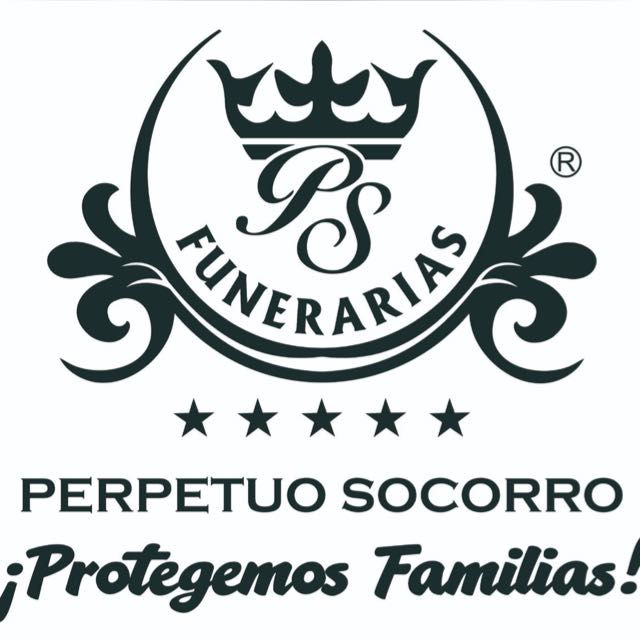
¡Protegemos Familias! — Más de 30 años brindando acompañamiento sereno, cálido y digno en los momentos de mayor trascendencia.
En Funeraria Perpetuo Socorro sabemos que despedir a quien amas no es un trámite ni un proceso comercial: es uno de los momentos de mayor sensibilidad y trascendencia en la vida de una familia. Desde 1994, nuestro propósito ha sido brindar un acompañamiento sereno y empático, asumiendo con rigor toda la gestión legal, los traslados y la preparación ceremonial para que tú y los tuyos puedan enfocarse únicamente en estar juntos y honrar su memoria en paz.
Atención sensible con certificación tanatológica y contención sincera en cada paso.
Presupuestos transparentes y cerrados por escrito desde el primer minuto.
Presencia y resolución en menos de 45 minutos en CDMX y zona conurbada.
Una guía de 4 pasos directos para resolver la situación con claridad, apoyo profesional y sin burocracia innecesaria.
Si ocurrió en hospital o clínica, el médico a cargo expide el documento. Si ocurrió en domicilio, coordinamos la visita de un médico legista certificado para la emisión del certificado oficial.
Nos contactas para recibir a tu asesor personal. Nos encargamos del traslado respetuoso desde el lugar de deceso hacia nuestras salas de velación en unidades climatizadas.
Gestionamos el Acta de Defunción oficial ante el Registro Civil y tramitamos los permisos sanitarios necesarios para la inhumación o cremación elegida.
Preparamos la capilla conmemorativa, los arreglos florales, la cafetería continua y la ceremonia de despedida con la solemnidad requerida.
Diseñados para brindar el máximo respeto en una sola línea de comparación con todos los elementos alineados a la misma altura.


Selección artesanal de ataúdes en maderas finas tratadas, metales sellados y urnas conmemorativas de alta durabilidad.
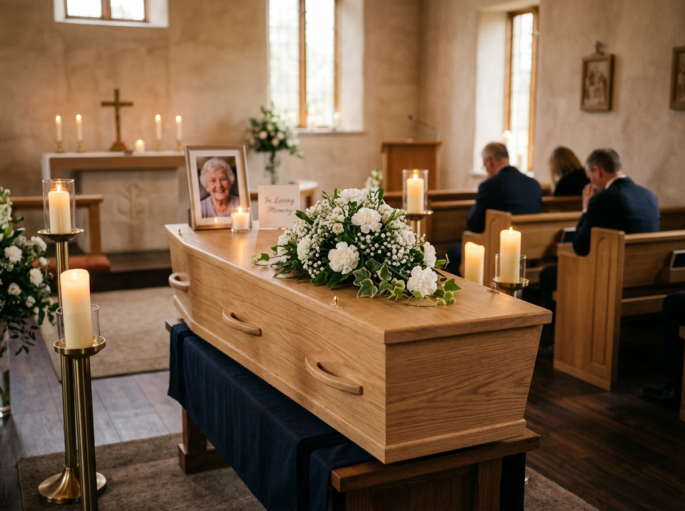
Construido en madera sólida de caoba con molduras talladas a mano, cuatro manijas reforzadas de bronce pulido y forro interior capitonado en satín perla.

Madera de cedro aromático curado que garantiza resistencia, con líneas clásicas sobrias, herrajes laterales continuos y almohada ergonómica hipoalergénica.

Diseño arquitectónico contemporáneo elaborado en roble seleccionado, sellado protector al aceite orgánico y tapizado en lino natural crudo.

Estructura de acero electroesmaltado con pintura anticorrosiva de alta fijación, junta selladora de silicón grado médico y sistema de cierre hermético.

Tallada en una sola pieza de mármol blanco de veteado sutil, sellada con placa conmemorativa en bajo relieve personalizable para nicho o cripta.

Elaborada con componentes naturales solubles en agua o biodegradables en tierra para ceremonias ecológicas de reintegración o siembra de árbol conmemorativo.
Espacios solemnes, climatizados y diseñados con arquitectura cálida para brindar privacidad, serenidad y máximo confort a tu familia.
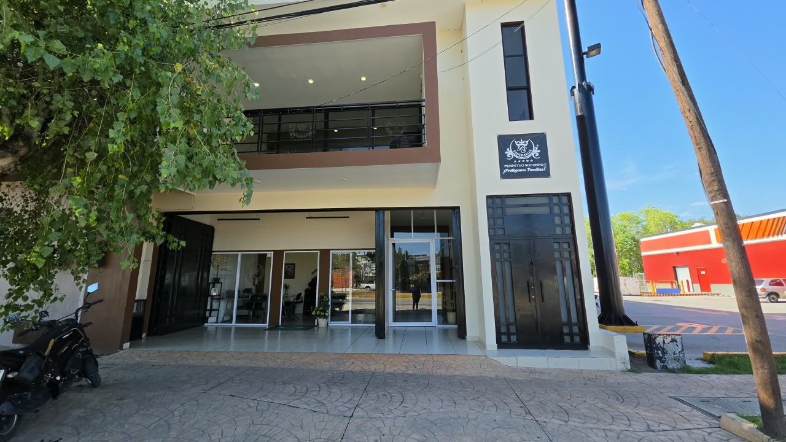
Entrada a principal a nuestras instalaciones cuenta con buena accesibilidad para nuestra sala de velación y oficinas administrativas
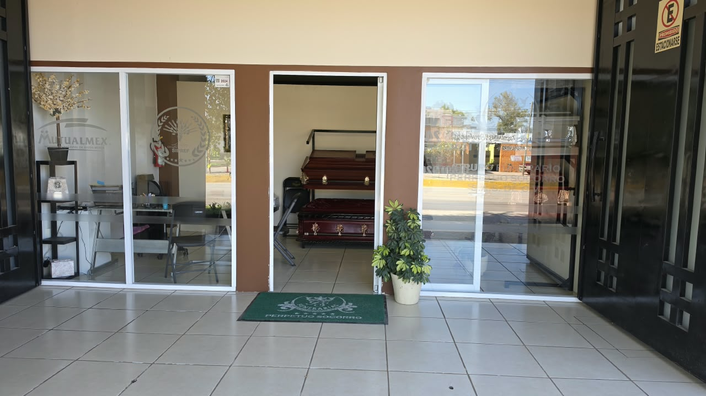
Entrada a principal a nuestras instalaciones cuenta con buena accesibilidad para nuestra sala de velación y oficinas administrativas
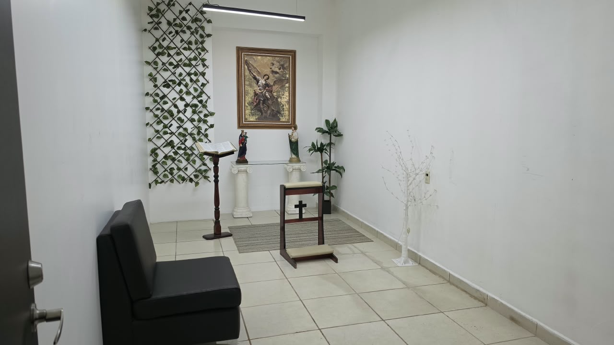
Espacio para garantizar ambiente de paz y máximo confort a tu familia, al momento de estar en oración.
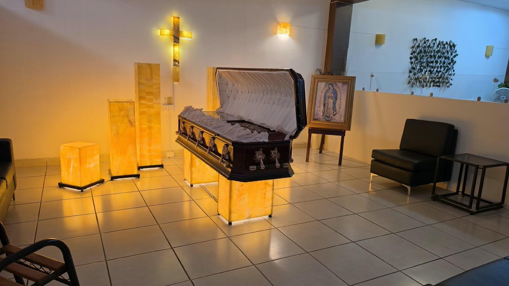
Área de velación principal en donde podrán realizar el velorio de su ser querido en un ambiente de tranquilidad y confort.
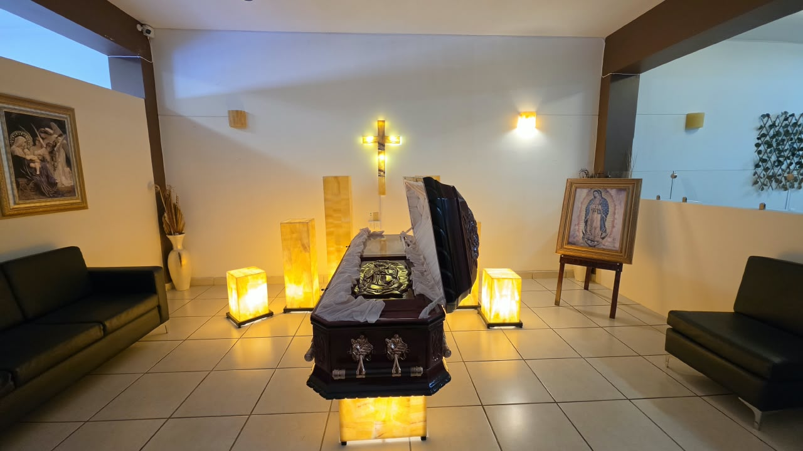
Área de velación principal en donde podrán realizar el velorio de su ser querido en un ambiente de tranquilidad y confort.
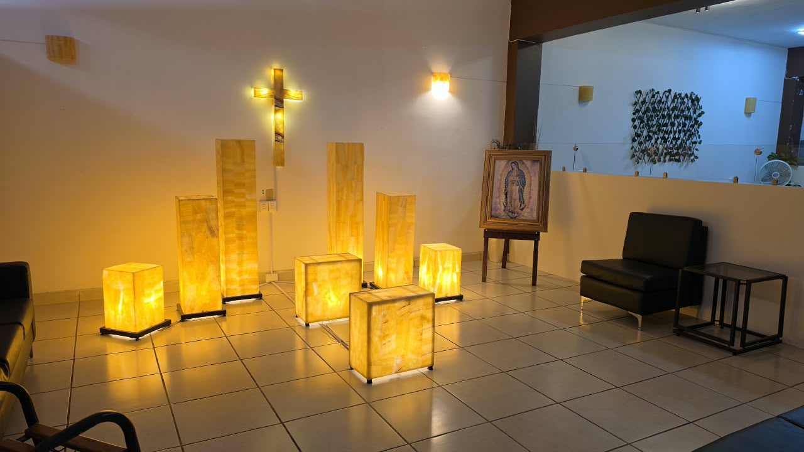
Área de velación principal en donde podrán realizar el velorio de su ser querido en un ambiente de tranquilidad y confort.
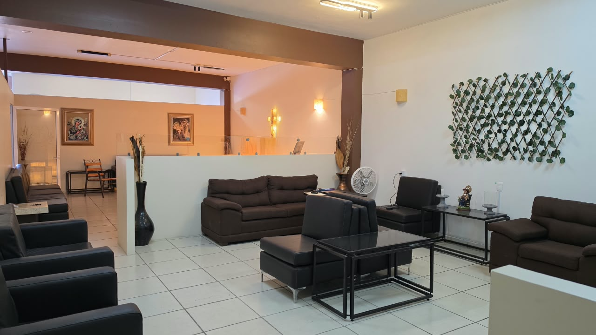
Área de descanso en donde podrán estar en compañía de sus familiares y amigos, en un ambiente de tranquilidad y confort.
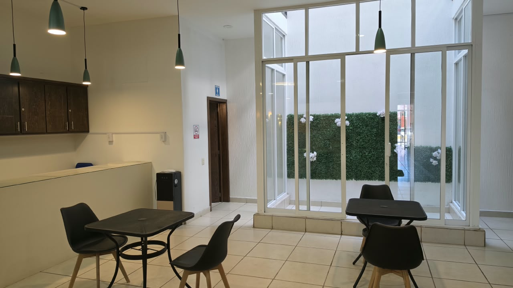
Zona de café en donde podrán disfrutar de un café mientras acompañan a sus familiares y amigos, en un ambiente de tranquilidad y confort.
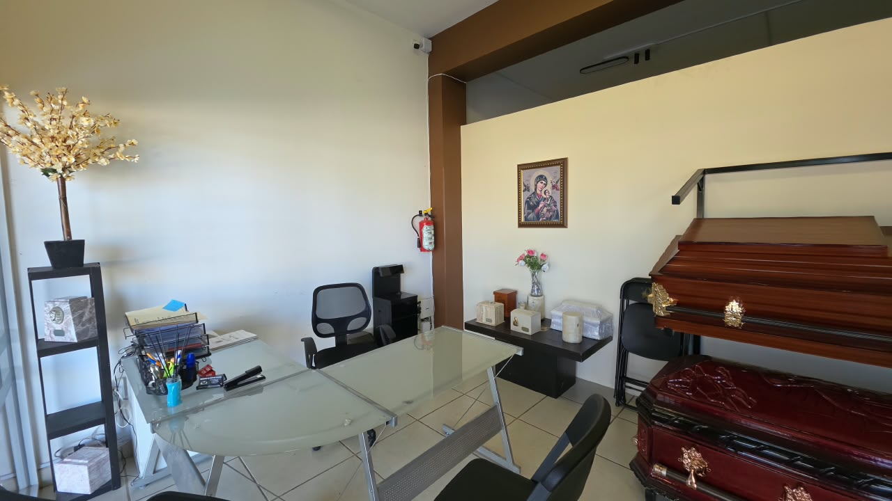
Oficinas administrativas en donde se brinda atención personalizada a los clientes.
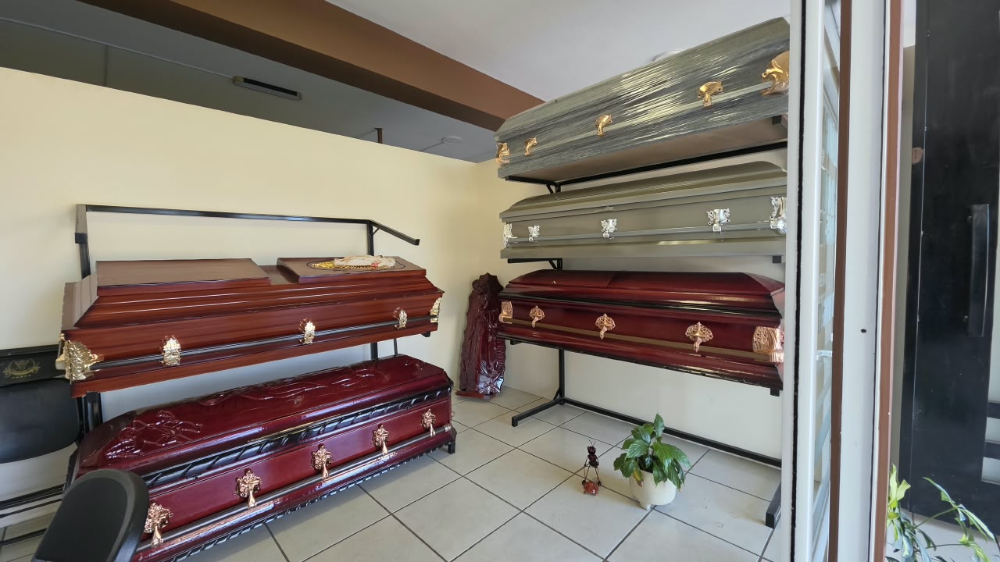
Oficinas administrativas en donde se brinda atención personalizada a los clientes.
Unidades ejecutivas de alta gama y carrozas con acondicionamiento sobrio para garantizar un traslado con pulcritud, puntualidad y el máximo respeto hacia tu familia.
Conductores profesionales en protocolo funerario, vestimenta formal y trato empático y respetuoso.
Sistemas hidráulicos de fijación, climatización hermética y estricto apego a normas sanitarias vigentes.
Planificación logística de rutas para traslados locales en CDMX, área metropolitana y servicios foráneos.
Anticiparse a lo inevitable es uno de los mayores actos de amor y responsabilidad que puedes brindar a quienes más amas.
Contrata hoy a costo presente y blinda a tu familia contra la inflación y los incrementos de precios futuros sin importar cuándo se requiera el servicio.
Cualquiera de nuestros planes puede cederse a familiares directos o terceros sin penalización ni trámites engorrosos en el momento en que se necesite.
Planes de financiamiento accesibles en mensualidades fijas sin intereses, protegiendo el patrimonio familiar y evitando decisiones apremiantes.
Cada homenaje es único. Compartimos una mirada a la serenidad, solemnidad y calidez humana con la que acompañamos a cada familia en sus horas más sensibles.
Familias que confiaron en nosotros durante sus horas más sensibles comparten su vivencia de respeto y calidez.
"Cuando mi padre falleció, estábamos completamente desorientados con los trámites del hospital. El asesor de Perpetuo Socorro nos guió con infinita paciencia y resolvió todos los documentos ante el Registro Civil con gran prontitud. Nos quitaron un peso enorme de encima."
"La capilla del Paquete Edén fue impecable: iluminación serena, flores frescas y un ambiente de total dignidad para despedir a mi tía. Lo que más reconocemos fue la transparencia total: el costo pactado fue exactamente el que se pagó al concluir el servicio."
"Contratamos el Paquete VIP para mi madre. La suite con recámara privada nos permitió descansar unas horas sin apartarnos de las visitas. La atención de la tanatóloga en los días siguientes fue un bálsamo para toda la familia."
Respuestas claras a las dudas legales y administrativas más recurrentes.
Lo principal es mantener la calma y contactar a nuestra funeraria. Si el deceso ocurrió en un hospital, el cuerpo médico expide el certificado médico de defunción. Si ocurrió en domicilio, orientamos y gestionamos la visita de un médico facultativo para emitir dicho documento legal. Una vez con el certificado, nos encargamos de todo el traslado y los trámites ante el Registro Civil.
La diferencia radica en la capacidad y horario de las capillas (desde 12 horas en Interfamiliar hasta suites privadas de 24 horas en VIP), los acabados del ataúd o urna (metálicos, maderas nobles o de importación), arreglos florales incluidos, cafetería y servicios complementarios como transmisión en vivo o música de cuerdas.
Sí. Todos nuestros planes integran la gestoría completa de actas de defunción ante el Registro Civil y permisos de traslado o cremación. En tu cotización se estipulan con total transparencia los derechos gubernamentales para evitar imprevistos económicos.
Totalmente. Puedes contratar cualquier paquete bajo la modalidad de Previsión Familiar con precios congelados a valor presente, transferible al 100% a familiares o amigos y con opciones de pago mensual diferido.
Nuestros paquetes están adaptados para llevar a cabo tanto inhumación en panteón tradicional como cremación en hornos ecológicos certificados, incluyendo la entrega de cenizas en urnas conmemorativas de madera noble o mármol pulido.
Ubicados estratégicamente sobre avenida principal con estacionamiento privado y accesibilidad para personas mayores.